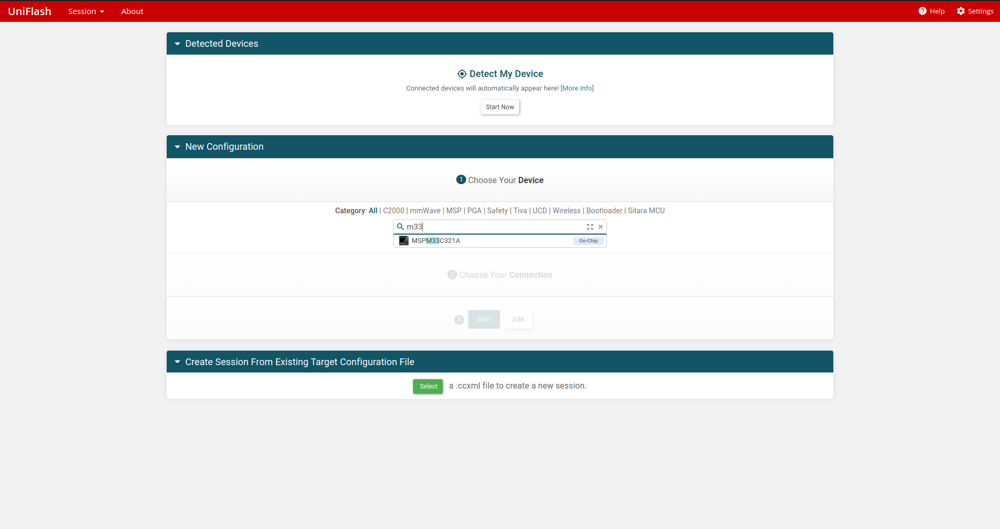
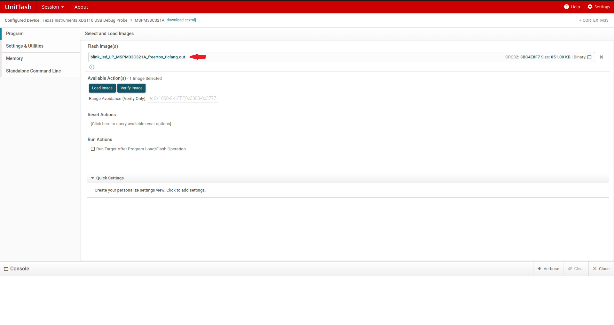
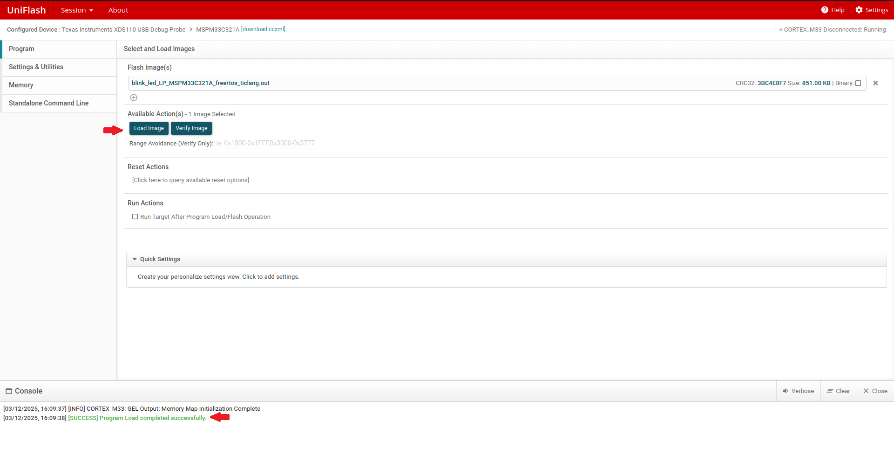
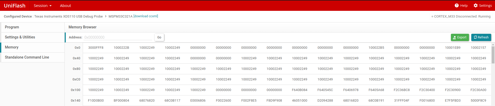

UniFlash Guide for MSPM33¶
1. Introduction¶
This guide describes the installation of the UniFlash tool and general practice of using it with TI’s MSPM33 devices.
This document is not intended to explain the use of UniFlash in detail. Please refer to the UniFlash Quick Start Guide for more information.
2. Prerequisites¶
The user is expected to have downloaded the following:
UniFlash 9.3.0 or newer (Download latest version from ti.com or access on the cloud at dev.ti.com)
Compiled application image(s)
Can be in multiple file formats for debugger connections including .out, .bin, .hex, .txt
Use your preferred IDE and compiler to build your application
UniFlash can connect and interact with the device either with a debugger connected via SWD to the device.
3. Using UniFlash with MSPM33 via the Debugger¶
The debugging interface such as XDS110 can be used by UniFlash to program the device. One can select the device (the on-chip version as shown below) and specific interface that will be used to start. Alternatively, UniFlash may auto-detect the MSPM33 LaunchPad if connected. The LaunchPad includes the Texas Instruments XDS110 USB Debug Probe.

3.1 Loading an Image.¶
Compile an application that is in a compatible format, such as a .out. All possible file types are described in the UniFlash Quick Start Guide.
Upload the flash image file as shown.

Adjust erase settings or other information as necessary. If performing a Factory Reset, please take special consideration as NONMAIN will be erased in the process. It is then the user’s responsibility to re-program non-main. It is recommended to verify this is correct behavior before proceeding with a Factory Reset.
Additionally, if using the factory reset, a password can be optionally provided. For more information, please refer to the corresponding device TRM.
Click Load Image. The image should be loaded correctly.

3.2 Reading From Memory¶
Using the Memory tab, UniFlash can also inspect the flash memory of the device simply by selecting Read Target Device.

5. Known Issues and Frequently Asked Questions (FAQ)¶
Please refer to the Known Issues and FAQ for more information